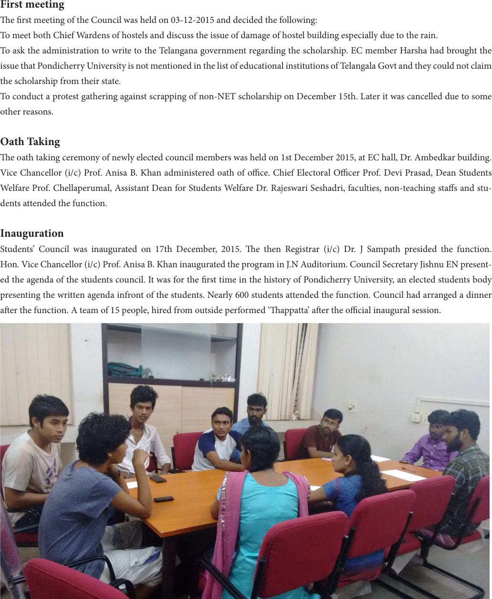

First meeting
e rst meeting of the Council was held on 03-12-2015 and decided the following:
To meet both Chief Wardens of hostels and discuss the issue of damage of hostel building especially due to the rain.
To ask the administration to write to the Telangana government regarding the scholarship. EC member Harsha had brought the
issue that Pondicherry University is not mentioned in the list of educational institutions of Telangala Govt and they could not claim
the scholarship from their state.
To conduct a protest gathering against scrapping of non-NET scholarship on December 15th. Later it was cancelled due to some
other reasons.
Oath Taking
e oath taking ceremony of newly elected council members was held on 1st December 2015, at EC hall, Dr. Ambedkar building.
Vice Chancellor (i/c) Prof. Anisa B. Khan administered oath of oce. Chief Electoral Ocer Prof. Devi Prasad, Dean Students
Welfare Prof. Chellaperumal, Assistant Dean for Students Welfare Dr. Rajeswari Seshadri, faculties, non-teaching stas and stu-
dents attended the function.
Inauguration
Students’ Council was inaugurated on 17th December, 2015. e then Registrar (i/c) Dr. J Sampath presided the function.
Hon. Vice Chancellor (i/c) Prof. Anisa B. Khan inaugurated the program in J.N Auditorium. Council Secretary Jishnu EN present-
ed the agenda of the students council. It was for the rst time in the history of Pondicherry University, an elected students body
presenting the written agenda infront of the students. Nearly 600 students attended the function. Council had arranged a dinner
aer the function. A team of 15 people, hired from outside performed ‘appatta’ aer the ocial inaugural session.